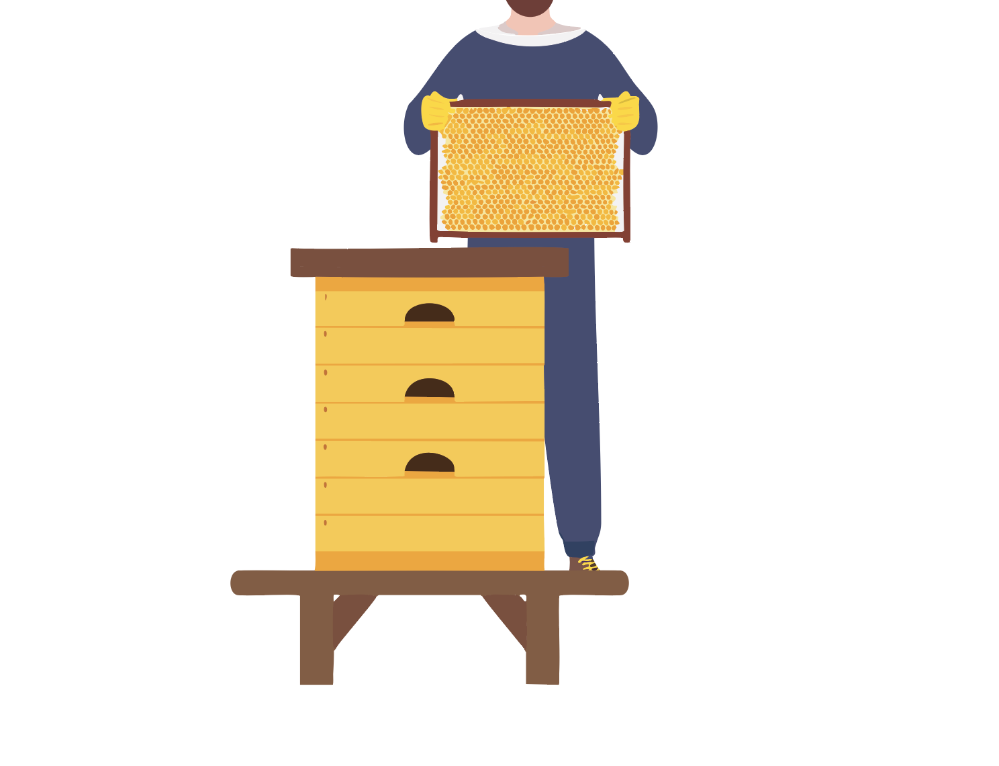
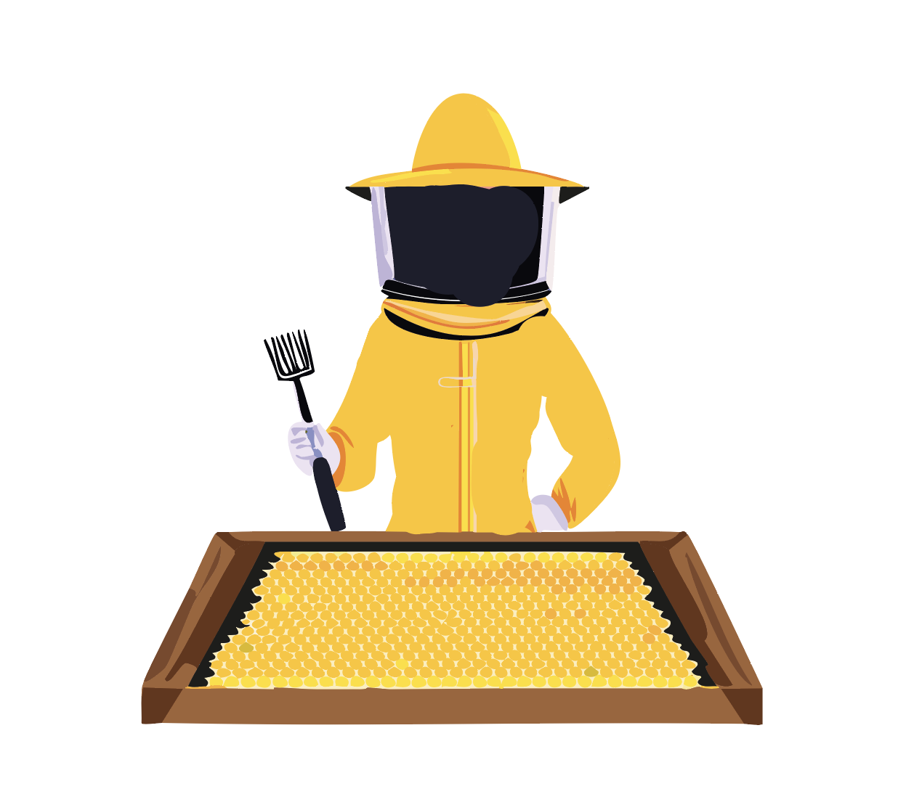
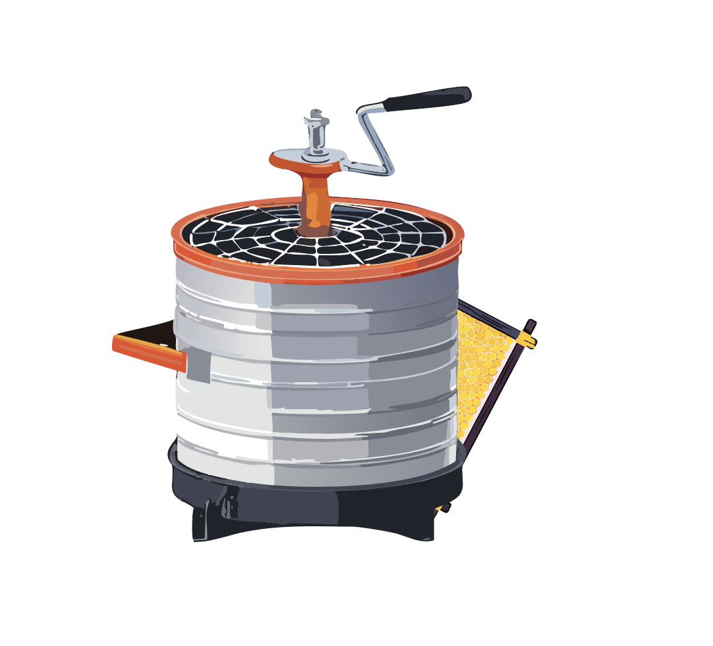
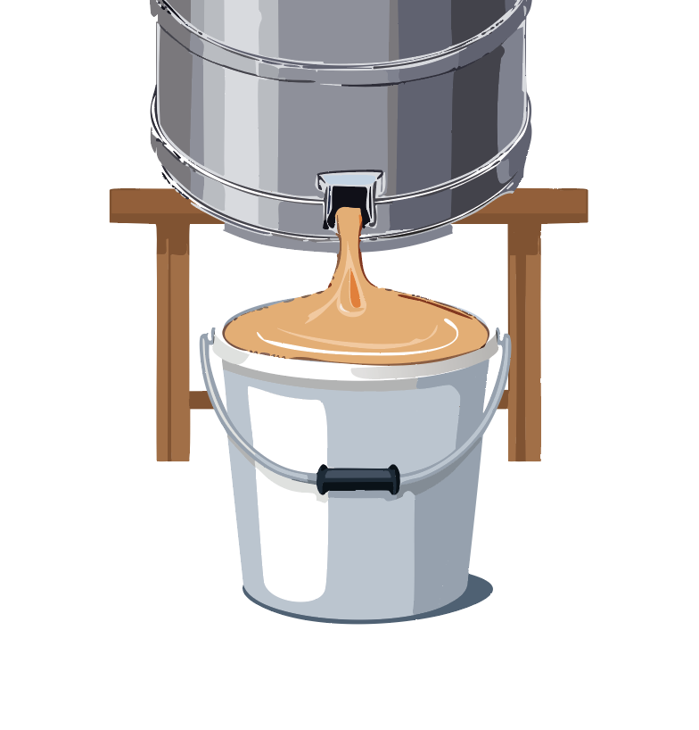
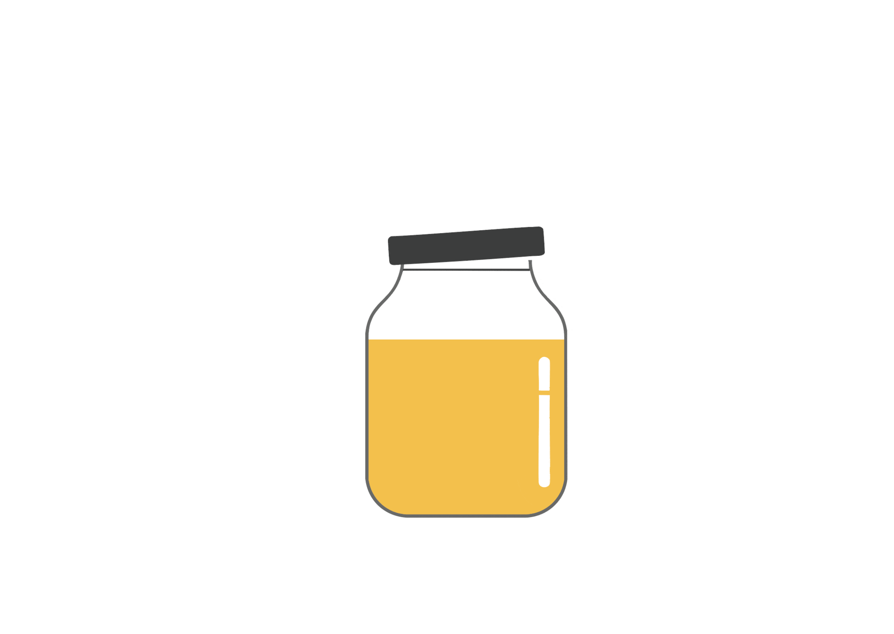

Вдома
Бджоляр визначає чи вже пора викачувати мед, він звертає увагу на к-ть меду у вулику та його зрілість, оскільки не зрілий мед є дуже рідким через к-ть вологи в ньому, в подальшому може призвести до бродіння меду |
 |
|  | Після відбору необхідних рамок для викачки меду, бджоляр розпечатує соти з медом, тим самим лишній, зрізаний з рамки віск називається забрусом |
розпеччатана рамка з медом потрапляє до медогонки, медогонки бувають різної величини, що впливає на к-ть рамок, які можна викачати за 1 підхід. Рамки вставляються в касети в середині медогонки та по починається процес викачки, касети з рамками починають розкручуватись |
 |
|  | Під дією відцентрової сили, мед з сот потрапляє на стінки медогонки та стікає вниз, піся наповнення піддона медом під зливну горловиину підставляється тара, та свіжо викачаний мед потрапляє в неї. |
В результаті ми отримуємо цінний продукт, який насичений безліччю корисними речовинами |
 |

Про головне

На полі

У вулику

На головну